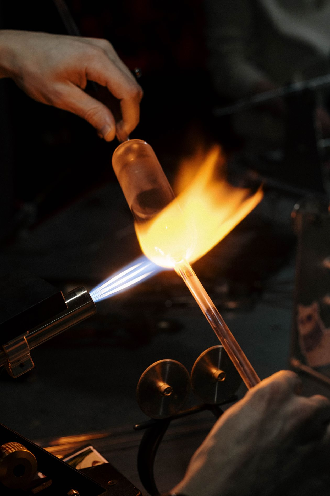
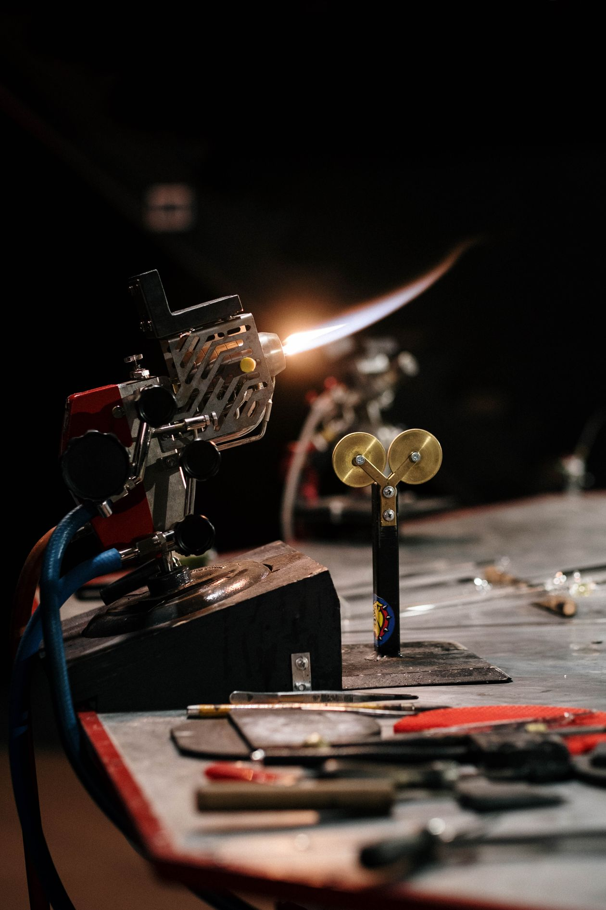

Thirty-five years of other people’s words, bent carefully.
Tomas Havel learned the trade the slow way — four years of sweeping, fetching and finally bending in someone else’s workshop — and has run his own bench since 1999. This page is the apprenticeship, the method, and the one argument the workshop will have with anyone: the LED question.
The bender
apprentice years credited as apprentice yearsTomas Havel arrived in Sheffield in 1991 with a portfolio of lettering and no idea that glass had opinions. Anton Weiss — master bender, third generation — took him on as an apprentice, which in a neon shop of that era meant a year of sweeping, cutting tube to length and carrying patterns before the flame was mentioned. The apprenticeship is credited here as what it was: four years (1991–95) of being taught, not four years of mastery.
By 1999 the hands were his own. Havel Tube Works opened in Leeds with one ribbon burner, one hand torch, a vacuum pump older than its owner and a rule that has survived every year since: the bench bends what it can defend — to the client’s face, with the tables printed, before the deposit is taken. The 214 refused or redrawn letters in the bench record are not lost work. They are the rule, working.
The workshop stays deliberately small: one bench, one bender, an installer for hanging days, and a waiting list that is published on the front page rather than hinted at. Two apprentices have been trained at this bench and both are credited by name in the bench book — the trade survives by being handed over properly, the same way it arrived.
my name is on the workshop. my initials are on every pattern. if a bend is wrong, there is no department to blame.

How a piece runs
six stages, in bench order — no stage is skipped for a deadline- ArtworkYour word, logo or drawing arrives. If it came from your designer, it stays your designer’s — the bench claims the making, never the design. Sizes are checked against Table B2 before anything is promised.
- PatternThe piece is drawn full-size on paper — the pattern — with principal bends numbered and the tube run planned from electrode to electrode. You approve the pattern, not a render.
- BendsEach letter is heated and bent over the pattern, bend by bend, cooling and checking against the paper as it goes. Breakages here are what the allowance exists for.
- FillFinished units are pumped out, filled — neon for the reds and oranges, argon with a mercury drop for the blues and greens — and sealed at the electrodes.
- Burn-inEvery unit runs on the bench, lit, before it leaves. Faults in the glass announce themselves here, in the workshop, where they are the bench’s problem — not on your wall, where they would be yours.
- InstallMounting, transformer and secondary wiring by the bench; the mains connection at the wall by your certified electrician. The piece is photographed lit, and its file joins the bench book.

The honesty page — on LED “neon”
an opinion, stated as one, with its reasonsClients ask, reasonably, why they shouldn’t buy the flexible LED product that calls itself neon at a third of the price. The bench’s position is printed here so nobody has to discover it mid-commission: this workshop does not sell LED flex as neon, and does not bend around it. That is an opinion. Here are its reasons, and you are free to weigh them differently.
The light is different
A gas tube emits in every direction from a column of excited gas; the line has depth, and the wall behind it takes part. LED flex is a row of points behind a diffuser, shining one way. Side by side there is no argument — which is why the imitation is always photographed alone.
The repair is different
A bent tube that fails can be opened, re-pumped, re-bent in part and returned to service; signs from the 1960s are on this bench’s repair rota still working. LED flex that fails is replaced whole and landfilled. Over twenty years, the “cheap” sign is bought three times.
The word should mean something
None of this makes LED flex a bad product — it is a good product for temporary work, long runs and tight budgets, and the bench says so to clients it isn’t right for. What it is not is neon. If a client wants the flex product, the bench will happily point them to honest sellers of it — under its own name.
Terms, printed before deposits
- Deposit: 50% before patterning begins; balance on the day the piece lights on your wall.
- Breakage allowance: on script and complex work, 7% of the tube line (Table F1), agreed in writing before the deposit. Block lettering carries no allowance — if the bench breaks it, the bench pays.
- Refusals: work below the Table B2 minimums will be refused as drawn and redrawn with you instead. The refusal is free; the redraw is part of the fee.
- Design rights: your artwork remains yours. The bench bends under your licence and claims the making only. Portfolio photographs of installed pieces are taken only with the client’s written agreement.
- Installation: bench supplies mounting, transformer and secondary wiring. Mains connection is by your certified electrician — the bench does not touch your fuse board.
- Turnaround: the bench book is published on the front page (currently 6 weeks). Film and theatre work may join the short-notice list when the bench is genuinely free — and only then.
“He showed us the table, told us our sign was too small to exist, and charged us nothing for the telling. Then he made the bigger one.”
Ruth Callaghan — owner, Casa Lume. See Case File 01.